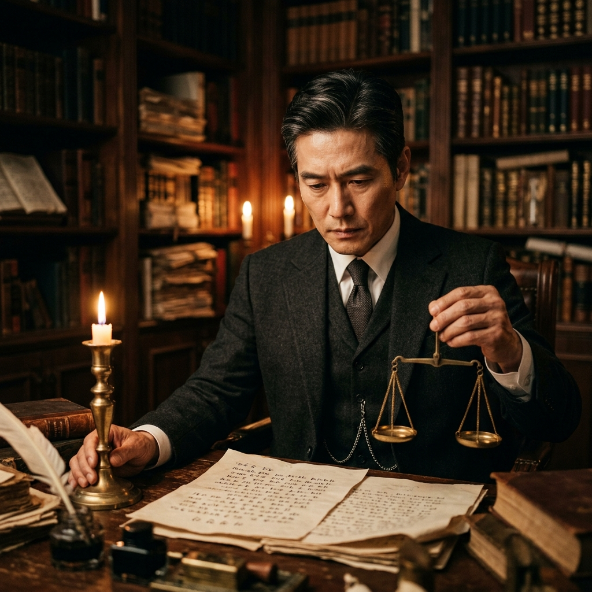
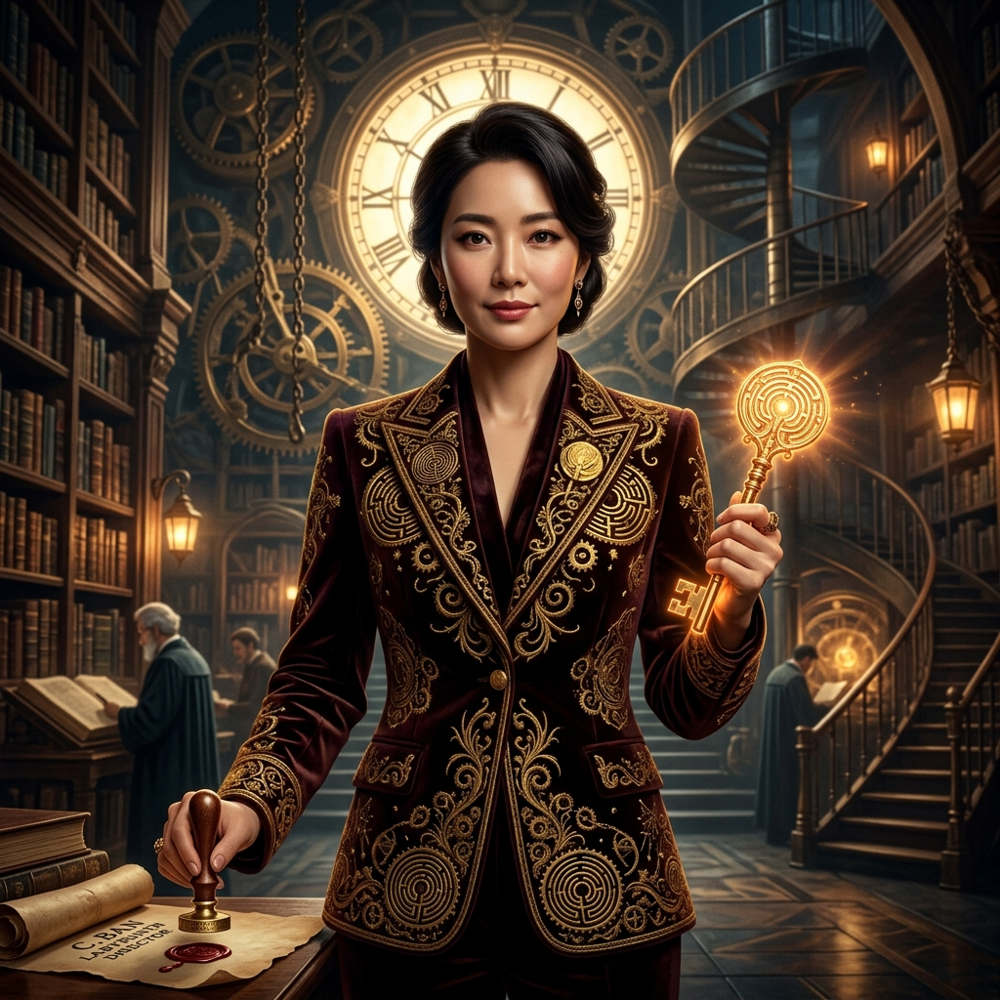

미로공방은 Antigravity CLI(agy)와 8인의 전문 서브에이전트가 단서 조사,
미궁 설계, 인물 심리, 복선 매트릭스, 집필, 서스펜스 조율, 논리 감정을 분담하여 완벽한 페어플레이 미스터리 소설을 짓는 AI 창작소입니다.
각 에이전트 카드를 클릭하여 사진, 상세 경력, 전문 스킬 및 인사 평가서를 확인하세요.

MSO-07-EXAM ACTIVE
MSO-08-DIRECT ACTIVE단 한 건의 논리 결함도 허용하지 않는 6단계 파이프라인과 3대 엄격 게이트
8인의 에이전트가 완성한 정통 밀실 회전 미궁 미스터리 단편을 직접 읽어보세요.
터미널에서 미로공방의 8인 에이전트를 직접 호출하여 새로운 작품을 창작하세요.
서로 다른 AI 개발 플랫폼으로 구현된 3대 창작 공방